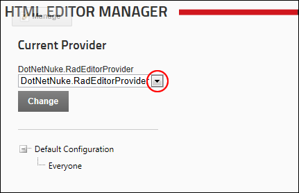

How to set which provider is used for the RadEditor control. DNN comes with two different providers for the RadEditor - the DotNetNuke.RadEditorProvider (default) and the TelerikEditorProvider which are both included with DNN 6+.
Note: The TelerikEditorProvider is not installed by default, however it is included as an available extension. You must install this provider or another suitable provider before they can be set.
